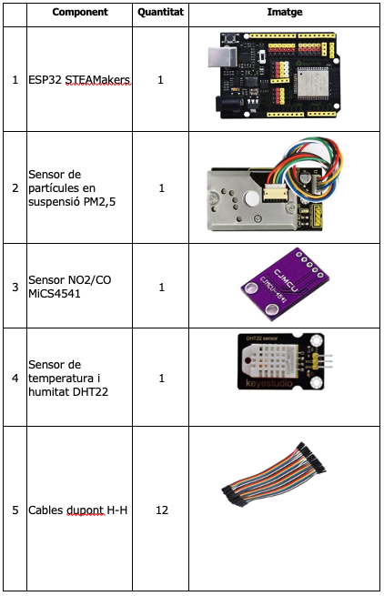
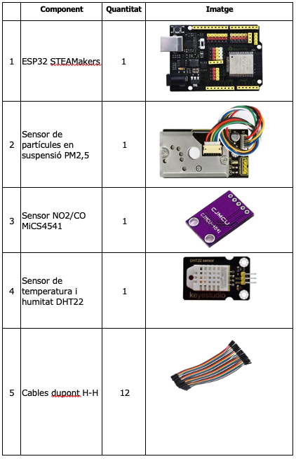
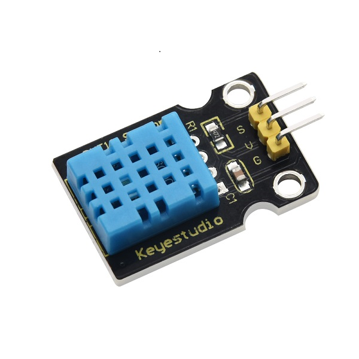

L’estació està dissenyada per ser tallada amb laser o ser impresa en 3D. L’assemblatge és molt senzill i es triga al voltant d’1 hora en muntar-la i realitzar totes les connexions, depenent de les habilitats de cada persona.

L’estació està dissenyada per ser tallada amb laser o ser impresa en 3D. L’assemblatge és molt senzill i es triga al voltant d’1 hora en muntar-la i realitzar totes les connexions, depenent de les habilitats de cada persona.

Per a què serveix? Una placa és un microcontrolador, és a dir, el “cervell” que permet gestionar tots els elements que hi connectem, en el nostre cas, els sensors, etc. Cal introduir-li les instruccions a través d’un programa. El programa que utilitzarem és simple, gràfic i didàctic. Funciona per blocs.
https://wiki.keyestudio.com/KS5016_Keyestudio_ESP32_PLUS_ Development_Board
Aquest sensor PM (Particulate Matter) serveix per a detectar i quantificar les micropartícules (pols) suspeses a l’aire.
Descripció: Detecta micro partícules d’un tamany igual o menor de 2,5 micres de diàmetre.
Aquest sensor (peça de color lila) detecta NO₂ i CO presents a l’aire. Incorpora dos sensors independents: CO: detecta de 1 a 1000 ppm (parts per milió); NO2: detecta de 10 a 400 ppb (parts per bilió).
El sensor té 3 connexions a part de les dues connexions per l’alimentació. La de les dades de NO2, les de CO i una connexió que serveix per a prescalfar el sensor.
Per a mesurar la temperatura (en ºC) i la humitat relativa (en %) de l’aire.
És un sensor que mesura la temperatura entre –40ºC i 80ºC, amb una precisió de +/- 0,5 ºC i la humitat relativa de l’aire de 0-100%, amb una precisió del 2%.
KS0431 EASY plug DHT22 Temperature and Humidity Sensor
Nosaltres usarem el DHT11:
Ks0034 keyestudio DHT11 Temperature and Humidity Sensor

Llicenciat sota la Llicència Creative Commons Reconeixement NoComercial SenseObraDerivada 4.0